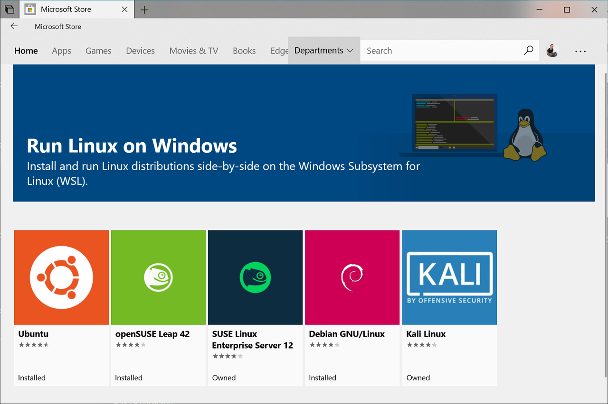
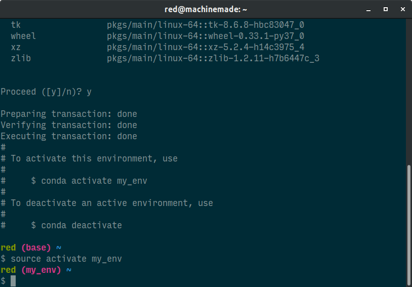
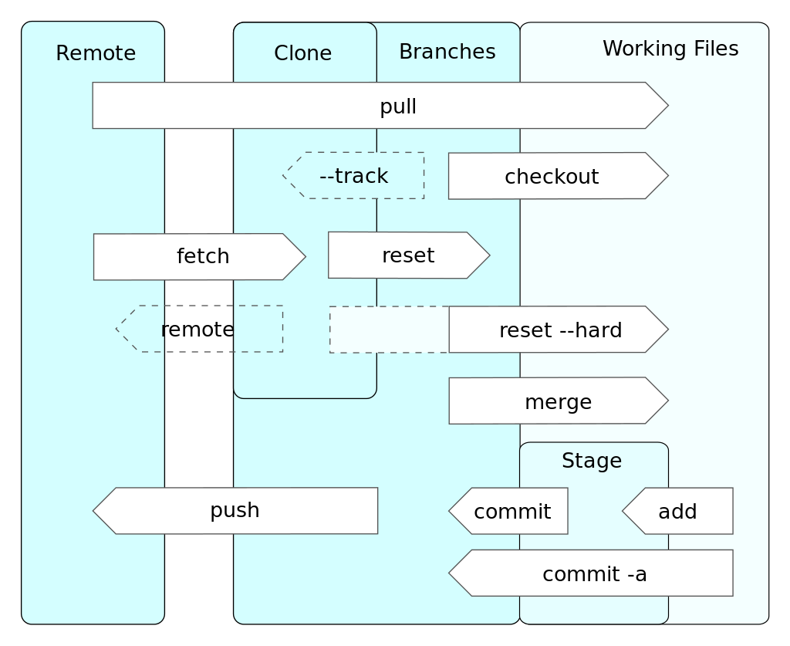

An opinionated guide for gearing up for data science
This post couldn't be any more overdue, but going forward, I'm hoping to be more active and to continue sharing my data science knowledge, particularly the nuances that you acquire on the job.
Whether you're a data scientist, machine learning engineer, or data engineer, your day-to-day typically involves writing code—we are developers after all. Today I'd like share my idiosyncrasies thoughts for setting up a solid local machine for data science, sprinkled with tips and software engineering best practices. What this post doesn't cover are prerequisites for entering the field.
Table of contents¶
Pick a Unix-like operating system¶
Why switch?¶
If you're developing on Windows, you're doing yourself a disservice. Here's why I recommend switching to a Unix-like OS such as a Linux distro:
- Avoids needless cross-platform support. When your model or pipeline is productionized, you don't want to discover at the last minute that it has a critical Windows dependency. Cloud compute typically runs on a Linux distro so save yourself and your coworkers of that hassle when making the transition.
- Many data science tools and packages are released for Linux first, then Macs, and eventually Windows. For example, TensorFlow added Windows support one year after it was open sourced.
- Some packages are aggravating to install on Windows. CVXPY, for example, is my go-to tool for convex optimization but thinking about setting it up on a Windows machine makes me cringe.
- Practically every developer uses Linux or a Mac—you don't want to feel alienated
It might seem like I have a bone to pick with Windows, which isn't true at all—I have a desktop at home running Steam 24/7 (PC master race!). Nevertheless, there's a way to transform Windows into an effective development platform that most people aren't aware of, so keep reading.
What are my options?¶
I prefer using bare-metal Linux on my local hardware—Ubuntu and Mint are mature operating systems, take minutes to set up, and look and feel like Windows and Mac OS. Hardware-wise, the Dell XPS 13 Developer Edition is the best bang for the buck. Not only does it have incredible build quality, you save some bucks by not paying for the license of a proprietary OS and later wiping it to install a Linux distro.
Another option is to get a Mac, which runs on Darwin, a Unix-like OS developed by Apple. The PC vs. Mac debate is long-dead—ultrabooks today have comparable, if not better, hardware design and are priced nearly the same. I like to tweak and tinker so I've never been a fan of Mac OS.
Making Windows more viable for development¶
If you're using Windows 10 but don't want to wipe your machine, there's actually a simple path to the world of Linux via Windows Subsystem for Linux (WSL). WSL is a platform developed by Microsoft in 2016 that allows Windows users to run Linux distros natively. This sorcery lets you install Debian, Ubuntu, Kali, etc. simply by visiting the Microsoft app store!

Unlike using a virtual machine, such as VirtualBox, to run Linux on Windows, WSL doesn't bring your machine to a crawl and devour your memory. WSL is also superior to dual-booting because you can actually access your Windows files and directories from Linux—no partitioning or rebooting. WSL is the best way to develop on Windows.
WSL comes preinstalled on Windows 10; activating it is even easier and faster than wiping your machine. The underlying architecture of WSL is also very elegant and worth reading over. It's hard to imagine that Microsoft is one of the biggest proponents of open source today—what a topsy-turvy world we live in.
Get Miniconda, not Anaconda¶
You may have heard about Anaconda—it's a widely used free and open source distribution of data science tools. Don't get Anaconda. It ends up installing hundreds of packages that you'll never use. Anaconda also eats up gigabytes of disk space.
Instead, download Miniconda (WSL users should get the Linux binary). This distribution, also made by the folks that built Anaconda, only includes 1) Python and its dependencies and 2) a handy package and virtual environment manager that can be used to install any package you want.
Always use a virtual environment¶
A virtual environment is a virtualization technology that allows you to isolate the exact packages, and their correct versions, necessary to successfully work on a project, run a script, or use a tool.
Ever try to run a script written by a coworker only to discover that it breaks because you have missing dependencies and/or the wrong versions? You could manually configure each and every dependency, but that's laborious and may also require upgrading or downgrading packages that you'd refer be left alone. A virtual environment solves these problems.
Conda is the virtual environment and package manager that ships with Miniconda. Why not just install packages with pip? Because pip is restricted to Python packages, whereas conda is language-agnostic. In addition, conda does a spectacular job ensuring dependencies and their versions are compatible with each other.
Creating a virtual environment¶
I've described using conda to set up virtual environments before, but because they're are so useful and important, it's worth reiterating.
- Open a terminal window and create a new environment by entering
$ conda create --name <env-name> python. After confirming, the new environment will be populated with Python and its dependencies. -
Activate the virtual environment by entering
$ source activate <env-name>. See how the environment name now appears in the prompt? That indicates you're "inside" the environment and now have access to its packages. -
Install packages you need for your project by entering
$ conda install <package-name>. If you can't find a package via conda, it's likely available through a different conda channel (search here). Your last resort should be using pip.

My default virtual environment typically contains Jupyter notebook, pandas, and scikit-learn. Install these packages and their dependencies by entering $ conda install jupyter pandas scikit-learn.
Using virtual environments¶
Now that you've created a virtual environment, what does your workflow look like? When you're ready to work on a project, activate its environment and get cracking! A good practice is to create a virtual environment for each project. You can multitask by having different environments activated in separate terminal windows. Environments are expendable—they only take up a bit of disk space—so make as many as you like.
When you launch a terminal window, you'll find yourself in the base virtual environment that comes with Miniconda. The only time you should interact with the base environment is if you need to update conda itself. Switch to the base environment and enter $ conda update conda. Keep conda updated regularly.
You can update individual packages in a virtual environment by entering $ conda update <package-name>. You can also update all packages by entering $ conda update --all. To conserve disk space, I also recommend removing unused packages/tarballs and clearing the cache by entering $ conda clean --all. More conda commands can be found here.
Finally, to use Jupyter notebook, activate the virtual environment it's located in and enter $ jupyter notebook. To enter an iPython console, enter $ ipython.
You've probably noticed we've been doing everything in the command line. If you're not comfortable in the command line yet, now is the time. Working in the command line will unequivocally give you more confidence as a developer—don't be afraid of it.
Set up git, learn git, use git¶
Time machines don't exist, but if you write code for a living, git comes pretty close. Git is a version control system that keeps track of changes made to a codebase by each developer. A git repository is home to both a codebase and its entire history; repositories are shared with other developers via a hosting site such as GitHub.
Git is also a distributed version control system—each developer gets a local copy of the repository. That means if you're offline, you can still develop, submit changes, and sync with Github when you're back online. And if GitHub were to go down or if their company were to shut down tomorrow, anyone's local repository would serve as a backup of the codebase and its history. That's powerful stuff.
If you're writing code, you need to version it. If everything else on this post is optional, using git is not.
Configuring git and GitHub¶
Git comes preinstalled in most Unix-like operating systems. Here's how to set it up:
- Launch a terminal window and set a git username by entering
$ git config --global user.name "<full-name>" - Set a git email address by entering
$ git config --global user.email "<email>" - Create a secure shell (SSH) key to authenticate with GitHub by entering
ssh-keygen -t rsa -C "<email>" - Accept the default path of the file in which the SSH key will be saved by pressing Enter
- Add a passphrase if you'd like to locally encrypt the SSH key or press Enter to skip this step (I prefer to skip the passphrase and trade the risk for the convenience of not having to enter it dozens of times each day)
- Navigate to where the SSH key was created:
/home/<username>/.ssh/ - Open the public key
id_rsa.pubin a text editor and copy its contents - Visit your Github's Settings page. Navigate to the SSH and GPG keys section, press the Add Key button, and paste in your SSH key.
Using git effectively¶
When I first learned about git, I found it convoluted. When I first used git, I found it daunting. However, when I began working on a development team, everything clicked—now I can't imagine life before git. But you shouldn't wait until you're developing collaboratively. While the CodeAcademy free short course is a decent introduction, the best way to learn git commands is to practice with a toy repository. Break stuff and learn how to fix them.

Once you have a strong grasp of git's mechanics, the next step is to understand when to commit your work. Don't wait until you've made dozens of changes to your code. For example, if you just refactored a few related lines of code, commit now. If you updated a class' docstring, it's time to commit. While this skill becomes second nature over time, the best practice is to commit smaller changes frequently.
You're not out of the woods yet. In fact, to get out of said metaphorical woods, you need breadcrumbs. Informative commit messages are the breadcrumbs for pinpointing exactly when and how you caused that catastrophic issue that's breaking your build. That's when you'll regret having to decipher ambiguous commit messages, such as "made minor changes", or overly broad ones like "uploaded files and added more functions".
Check out Chris Beams' phenomenal guide for writing informative commit messages. At the very least, start every commit message with a one-liner of what you changed followed by why it was changed. Your future self will thank you.
Select an editor, use notebooks sparingly¶
There are a countless different tools for writing code. Some people love command line text editors such as Vim. Others adore GUI-based text editors like Sublime, Atom, and VSCode. Still others swear by IDEs such as PyCharm. Find the one that fits your workflow style.
I'm a Sublime man myself. I also use the dark Solarized theme anywhere I can—dark themes give your eyes a rest. And while we're here, check out Input font—it was designed from the ground up for programming.
If you use Spyder to develop Python, stop today. Spyder was designed for academic data analysis. You're not an analyst, you're not in academia. For starters, take a look at VSCode. Once you've experienced git gutter indicators, you'll never want to go back to Spyder.
What about Jupyter notebook as a development tool? This topic has been argued to death. Sure, many have nobly attempted to enable versioning, linting, and testing of notebooks, but in the words of Ian Malcolm...
When I first started exploring data science, I enjoyed using Jupyter notebooks to facilitate my learning. However, as the case with most new developers, notebooks became a dangerous crutch. Nowadays, I seldom touch Jupyter and when I do, I use a Jupyter notebook as a...notebook; literally as a scratchpad. Moreover, as I removed notebooks from my workflow, my programming chops improved noticeably, I felt at home in the command line, git made sense...I could go on. Correlation or causation?
Comments
Comments powered by Disqus